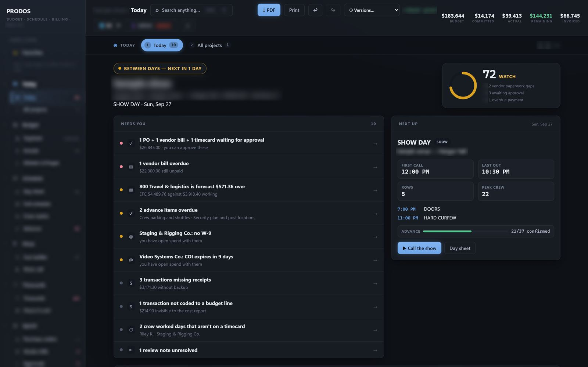
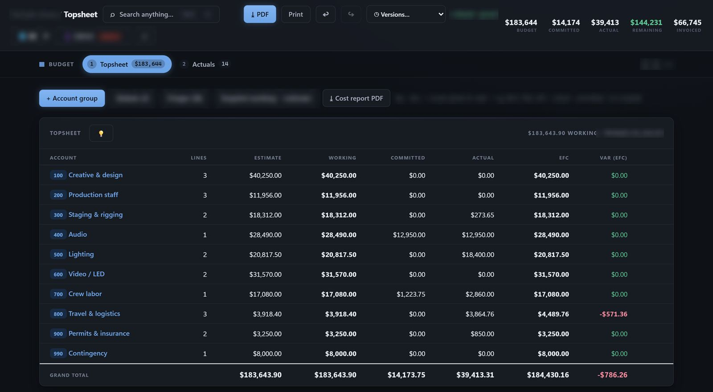
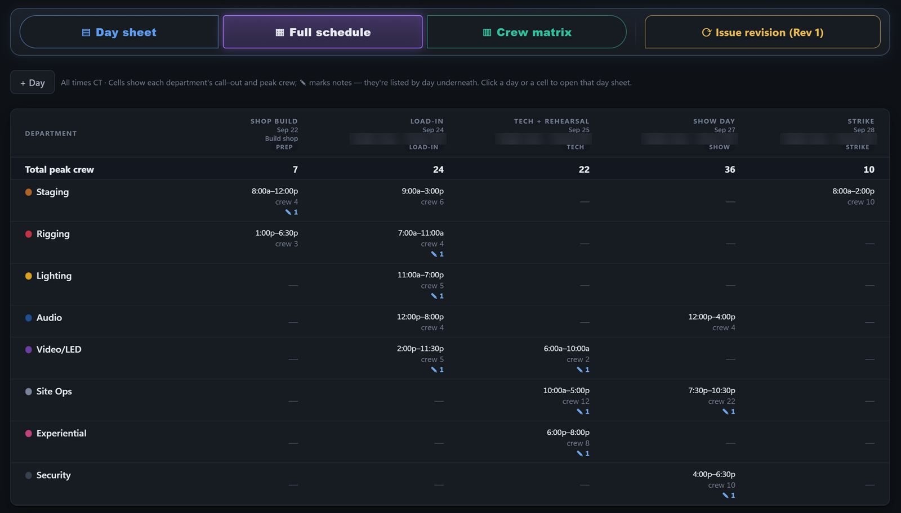
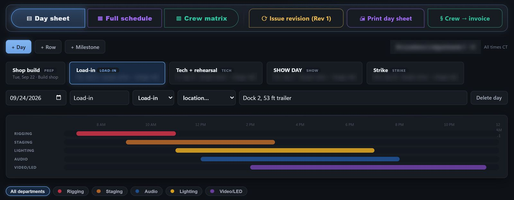
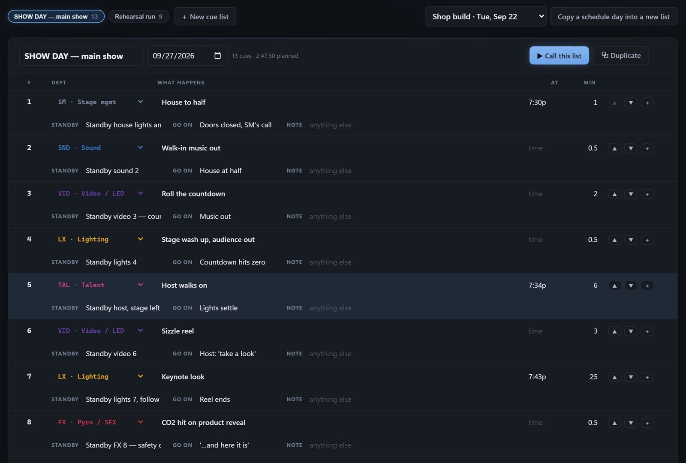
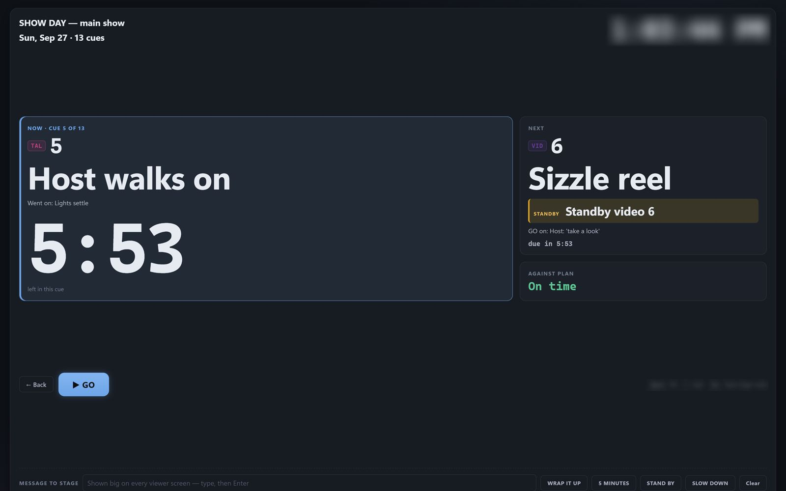
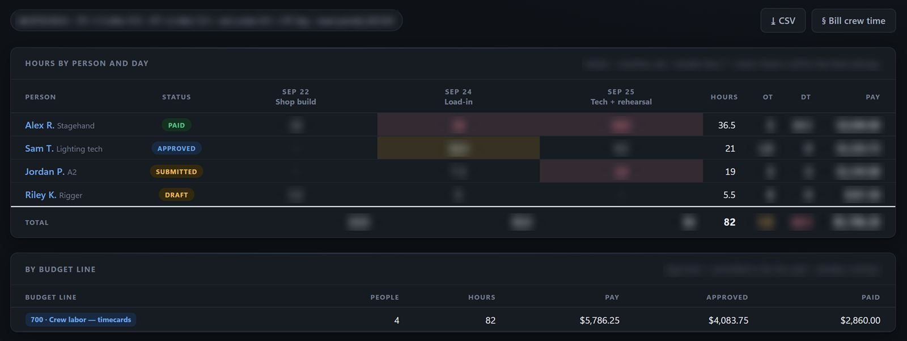
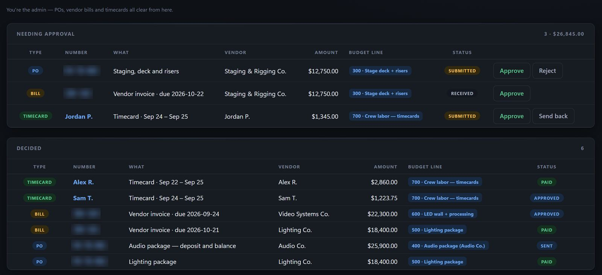
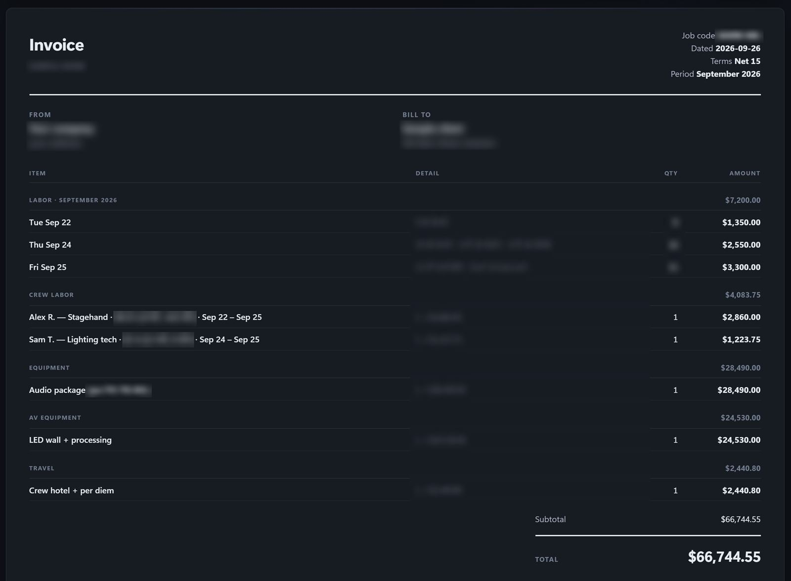
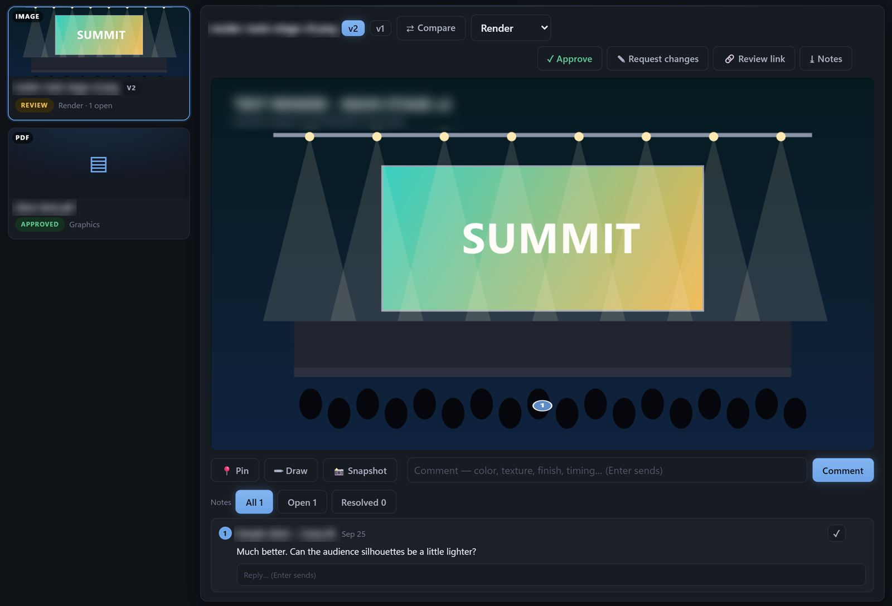

Production IP
We built our own production operating system.
PRODOS holds a live production's money, time and show call in one place.
What it runs
The whole production, in one system.
- Today
- Budget
- Schedule
- Show call
- Timecards
- Advance
- Spend
- Billing
- Files
- People
A look inside
The screens, not the manual.
Enough to show how it feels; not enough to build one.










Every screen shows a fictional sample show. Real productions stay private.
Built in-house. Run our way.